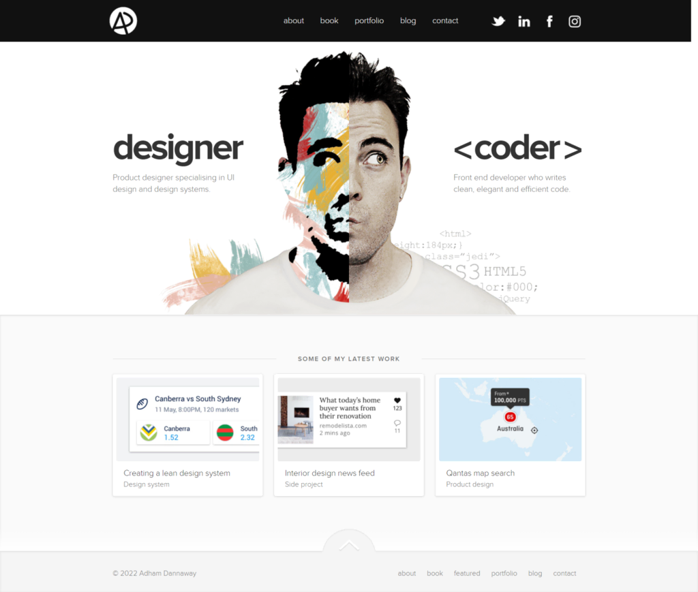
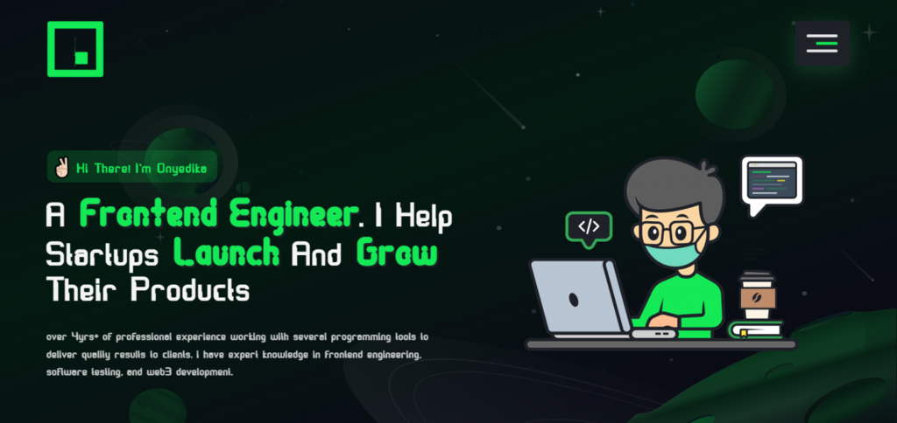

Sou estudante de Análise e Desenvolvimento de Sistemas, iniciando minha trajetória como desenvolvedor Frontend. Tenho interesse em criar interfaces modernas, funcionais e acessíveis, aplicando boas práticas de HTML, CSS e JavaScript. Busco aprender continuamente, construir projetos práticos e desenvolver habilidades em frameworks e bibliotecas modernas, transformando ideias em experiências digitais eficientes e atraentes.
Habilidades
Html5
Css3
JavaScript
Projetos
Portflólio

Portfólio moderno e interativo, desenvolvido para apresentar projetos de design e desenvolvimento web com elegância e clareza. Estrutura responsiva, animações suaves e navegação intuitiva, destacando as principais competências técnicas e criativas do autor. Ideal para captar a atenção de recrutadores e clientes.
Landing page

Landing page dinâmica criada para promover produtos ou serviços de forma clara e objetiva. Layout otimizado para conversão, com design moderno, cores atrativas e chamadas à ação estratégicas. Totalmente responsiva e integrada com as melhores práticas de SEO e performance web.